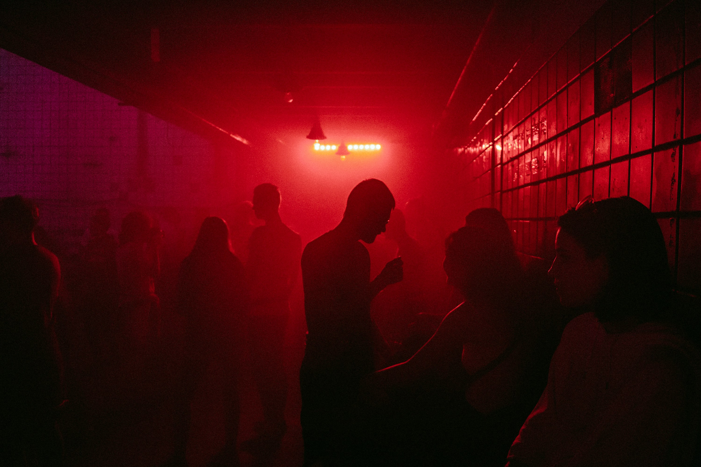

캐슬
백의
이스크라
캐슬홀딩스
이스크라
리사(
여우
)
- 이스크라의 마담. 킬러들을 고용 및 관리하며 조직을 운영하고 있다.

티그로(전 뜨거운 피 계파장)
그롤라(현 뜨거운 피 계파장)
아퀼라(자유로운 영혼 계파장)
구스타프(차가운 눈 계파장)
리사(이스크라 대표 마담)
수장은 리사이며 러시아에서의 줄어드는 킬러의 수요에 한국 캐슬에 기대어 조직은 운영하고자 한다. 계파 리더급들은 캐슬 10강에서도 상위에 준한다.